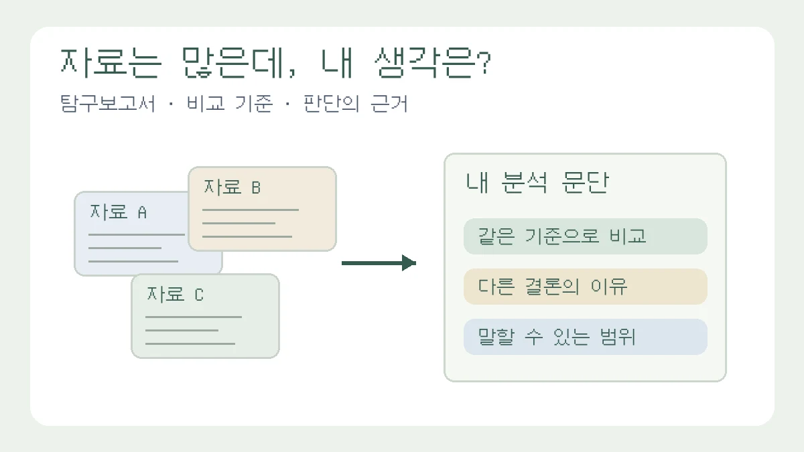

자료는 많은데 ‘내 생각’이 없다? 탐구보고서를 바꾸는 3가지 질문
자료를 모았지만 본문이 요약으로 끝난다면, 비교 기준·결론이 다른 이유·말할 수 있는 범위를 점검하세요. 수정 전후 문단과 가상 사례로 분석하는 법을 보여드립니다.

자료를 모으느라 며칠을 썼는데, 본문은 “A 자료에서는 이렇게 말한다. B 자료에서도 비슷하게 말한다”로 끝납니다. 결론에는 “이 문제에 관심을 가져야 한다”만 남습니다. 이 초안에 필요한 것은 참고문헌 한 개가 더 아닐 수 있습니다. 자료를 선택하고 비교한 이유가 빠졌는지 먼저 확인해야 합니다.
‘내 생각을 쓰라’는 말을 감상이나 강한 찬반 의견을 넣으라는 뜻으로 받아들이면 더 막막해집니다. 탐구보고서에서 자기 판단은 “나는 중요하다고 생각한다”보다 무엇을 같은 조건으로 비교했고, 어떤 근거 때문에 결론을 바꿨는가에 가깝습니다. 이 칼럼은 주제를 처음 고르는 법이 아니라, 자료 조사를 마친 초안을 분석 문단으로 고치는 방법을 다룹니다.
자료 요약이 필요한 자리와 분석이 필요한 자리는 다릅니다
요약 자체가 나쁜 것은 아닙니다. 서론에서 배경을 설명하거나 선행연구를 소개할 때는 자료 내용을 정확히 줄이는 작업이 필요합니다. 문제는 본론까지 자료별 줄거리로 채우고, 그 자료가 자신의 질문에 어떤 답을 주는지 쓰지 않는 경우입니다.
Purdue University의 글쓰기 자료인 Purdue OWL의 자료 종합 안내는 요약과 종합을 구분하며, 여러 자료의 관계를 살펴 더 넓은 결론을 구성하는 방법을 설명합니다. 아래의 세 질문은 그 구분을 고등학생의 보고서 수정에 적용한 편집팀의 점검 방법입니다. 특정 학교의 채점 기준은 아니므로 과제 안내를 먼저 확인하세요.
질문 1. 나는 무엇을 같은 기준으로 비교했나?
자료를 A·B·C 순서로 정리하기 전에 공통 비교 항목을 하나 고르세요. 사회 주제라면 조사 대상과 기간, 과학이라면 측정 조건, 문학이라면 같은 사건을 다루는 서술 방식이 비교 기준이 될 수 있습니다. 기준 없이 ‘다양한 자료를 참고했다’고 쓰면 자료끼리 연결되지 않습니다.
다음은 학교의 휴대전화 보관 방식을 다룬 교육용 가상 사례입니다. 자료 A·B와 운영 조건은 설명을 위해 만든 것이며 실제 학교 조사나 정책 효과를 뜻하지 않습니다.
수정 전
자료 A는 휴대전화 사용 제한이 필요하다고 한다. 자료 B는 학생의 자율성을 존중해야 한다고 한다. 두 입장이 모두 중요하다.
이 문단은 입장을 나열했지만, 무엇을 비교하는지 드러나지 않습니다. 초안 옆에 ‘보관 시간’, ‘긴급 연락’, ‘수업 외 사용’이라는 비교 항목을 적고 두 자료를 다시 읽어 봅니다.
수정 후
두 자료의 의견을 찬반으로만 나누지 않고 보관 시간과 긴급 연락 절차를 기준으로 비교했다. 가상 자료 A는 수업 중 보관을, B는 등교부터 하교까지의 일괄 보관을 전제로 한다. 따라서 의견 차이에는 자율성에 대한 입장뿐 아니라 제한 시간의 차이도 포함되어 있다. 먼저 같은 시간 범위에서 두 방식을 비교해야 한다고 판단했다.
교과 개념도 이때 사용합니다. 권리 충돌이나 규칙의 정당성을 배웠다면 그 개념으로 비교 항목을 정하세요. 개념 이름을 결론에 한 번 붙이는 것보다, 자료를 읽는 기준으로 사용하는 편이 무엇을 배웠는지 설명하기 쉽습니다.
질문 2. 두 자료의 결론은 왜 다를까?
다른 결론을 발견했다고 바로 한쪽을 틀렸다고 판단하지 마세요. 조사 대상, 자료 수집 시점, 용어의 정의, 측정 방법부터 대조하세요. 같은 ‘이용 시간’도 하루 전체 이용인지 수업 중 이용인지에 따라 다른 자료가 됩니다.
각 자료에 대해 대상·기간 / 비교하거나 측정한 것 / 결과 / 내 질문에 사용할 수 있는 범위를 한 줄씩 적어 보세요. 출처의 기관명, 문서 제목, 발행 연도, 확인한 쪽이나 표 번호도 함께 남깁니다. 기관이 같다고 동일한 조사라는 뜻은 아니며, 다른 기사 두 편이 같은 원자료를 인용했다면 독립적인 근거 두 개로 세지 않습니다.
가상 초안의 수정 메모
처음에는 A와 B의 차이를 ‘학생과 교사의 대립’으로 해석했다. 다시 확인하니 보관 시간과 예외 절차가 달랐다. 두 자료만으로 이해관계자 전체의 입장을 설명할 수 없으므로 집단 간 대립이라는 표현을 삭제하고, 운영 조건의 차이로 비교 범위를 좁혔다.
이 메모에는 판단의 변경이 담겨 있습니다. 보고서에 내 생각이 부족하다면, 처음부터 더 멋진 주장을 만들기보다 자료를 읽고 버린 주장을 찾아보세요. “처음에는 이렇게 보았지만 이 조건을 확인한 뒤 고쳤다”는 문장이 쓸 만한 분석의 출발점이 됩니다.
질문 3. 이 근거로 어디까지 말할 수 있나?
결론의 힘은 표현의 세기와 같지 않습니다. 한 학급 설문이라면 그 학급 응답에 대한 설명과 전국 학생에 대한 주장을 구분해야 합니다. 문헌 비교만 했다면 직접 실험으로 효과를 확인한 것처럼 쓰지 않아야 합니다. 근거가 부족할 때는 ‘효과를 입증했다’보다 ‘검토할 조건을 정리했다’가 정확할 수 있습니다.
수정 전
휴대전화를 보관하면 모든 학생의 집중력이 높아지므로 전면 시행해야 한다.수정 후
이번 가상 문헌 비교에서는 보관 시간과 예외 절차에 따라 운영 방식이 달라진다는 점을 정리했다. 집중력 변화는 직접 측정하지 않아 학습 효과를 결론으로 제시할 수 없다. 후속 조사에서는 수업 중 보관과 종일 보관을 구분하고, 긴급 연락 절차에 대한 이용자 의견을 함께 확인할 필요가 있다.
두 번째 문단이 더 조심스럽다고 해서 판단이 사라진 것은 아닙니다. 측정하지 않은 효과를 제외하고, 다음에 무엇을 확인할지 정했습니다. ‘나는 찬성한다’가 없어도 자료에 근거한 선택과 제한이 보입니다.
초안에서 한 문단만 골라 이렇게 고쳐 보세요
보고서 전체를 다시 쓰기 전에 자료 설명이 길게 이어지는 문단 하나를 고르세요. 원자료의 주장과 수치에는 출처를 표시하고, 자신의 비교·해석·판단에는 그 판단을 뒷받침하는 이유를 붙입니다. 기존 문장과 바꾼 문장을 나란히 두면 생각의 변화도 기록할 수 있습니다.
- 그 문단이 답해야 할 질문을 한 문장으로 적습니다.
- 질문과 관계없는 배경 설명은 줄이고, 비교할 자료와 조건을 남깁니다.
- 자료 사이의 공통점이나 차이를 설명한 뒤, 그 차이가 질문의 답에 어떤 영향을 주는지 씁니다.
- 근거로 확인한 내용과 아직 확인하지 못한 내용을 구분합니다.
문장이 막히면 “___를 기준으로 비교하니 ___가 달랐다. 이 차이는 ___ 때문에 생겼을 가능성이 있다. 다만 ___는 확인하지 못해 ___까지는 말할 수 없다”를 연습 틀로 사용할 수 있습니다. 빈칸을 채울 근거가 없다면 문장을 꾸미지 말고 자료나 질문을 다시 확인하세요. 이 틀 자체가 평가를 보장하지는 않습니다.
실험 보고서는 자신의 관찰값과 조건이 먼저이고, 작품 분석은 원문의 구체적인 표현이 먼저입니다. 모든 과제에 자료 두 개를 억지로 넣을 필요도 없습니다. 과학 보고서의 오차·한계 작성법과 국어·문학 작품 분석 예시에서 과목에 맞는 근거의 형태를 확인할 수 있습니다.
부모가 도울 때는 완성 문장 대신 판단 이유를 물어보세요
부모가 결론을 대신 써 주면 제출할 글은 생기지만 학생의 판단을 확인하기 어렵습니다. “왜 이 두 자료를 골랐어?”, “같은 조건으로 비교한 거야?”, “처음 생각과 달라진 부분은 어디야?”를 물어보세요. 학생이 답하지 못하는 부분은 부모가 메울 빈칸이 아니라, 학생이 다시 확인할 지점입니다.
지금 초안을 열고 자료 설명 뒤에 자신이 비교한 이유가 있는지 보세요. 참고문헌 목록을 늘리는 대신 그 이유를 한 문단에 먼저 써 보는 것이 이번 수정의 목표입니다. 보고서 전체 흐름이 필요한 독자는 탐구보고서 대표 작성 가이드로 이어서 읽을 수 있습니다.
이 칼럼은 운영자의 관점과 일반 교육 정보를 담고 있으며 특정 대학 합격이나 평가 결과를 보장하지 않습니다.
함께 볼 글
탐구보고서 처음 쓰는 법: 질문·자료·분석·결론을 연결하는 실전 예시
가상 공지 네 개를 비교하며 관찰과 해석, 결론의 한계를 구분하고 보고서 한 편으로 묶습니다.
과학 과목 탐구보고서에서 오차와 한계 쓰는 법
과학 보고서의 오차와 한계는 실패 고백이 아니라 탐구의 신뢰도를 높이는 설명입니다.
국어/문학 탐구보고서에서 작품 분석을 진로와 연결하는 법
문학 보고서는 작품 감상에서 멈추지 않고 표현 방식, 사회 맥락, 진로 관심을 조심스럽게 연결해야 합니다.